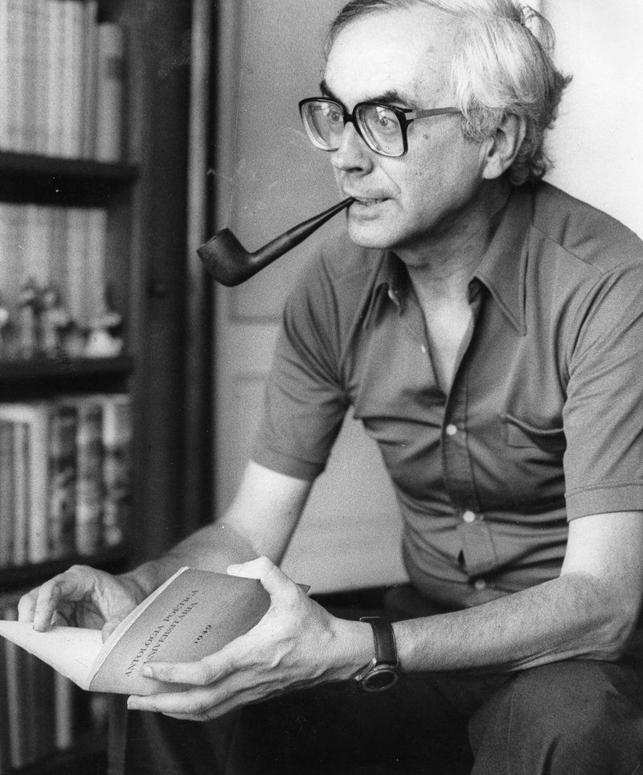

CURIOSIDADES
Origen del Himno del Barcelona: Una de las curiosidades de Barcelona más interesantes es el origen de su himno oficial, el “Cant del Barça” . Este himno fue compuesto en 1974 para celebrar el 75 aniversario del club . Lo que muchas personas no saben es que las letras fueron el resultado de una competencia entre los socios del club. El ganador fue Josep Maria Espinàs , quien colaboró con el músico Manuel Valls para crear esta pieza icónica.
El fichaje más caro en la historia del club: El jugador Phillipe Coutinhotiene el récord de ser el traspaso más caro en la historia de la institución blaugrana . El brasileño llegó procedente del Liverpool FC en enero de 2018 a cambio de 135 millones de euros , llegando a 160 por variables.
El cuarto equipo más antiguo en España:De todos los equipos que han jugado alguna vez en Primera División, el conjunto catalán es el cuarto con más antigüedad. Sólo es superado por el Recreativo de Huelva (1889) , Sevilla (1890) y Athletic (1898).

© copyright FC Barcelona.com